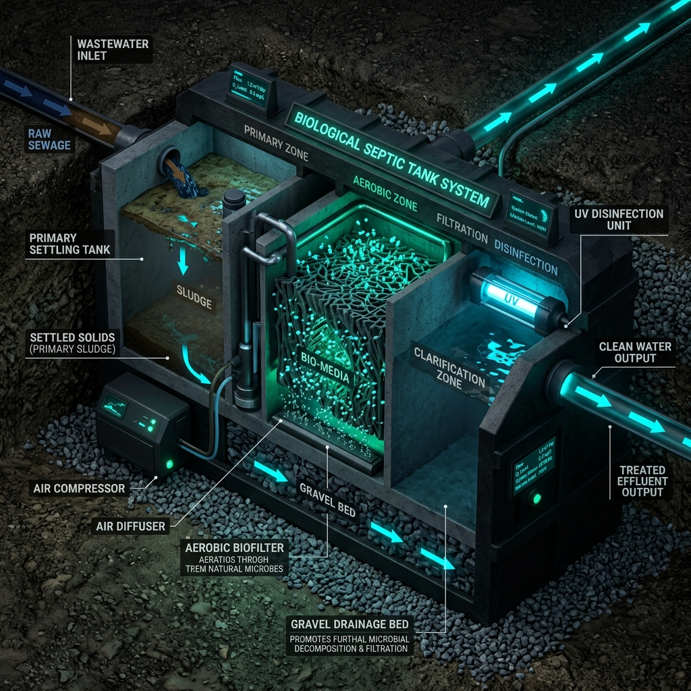
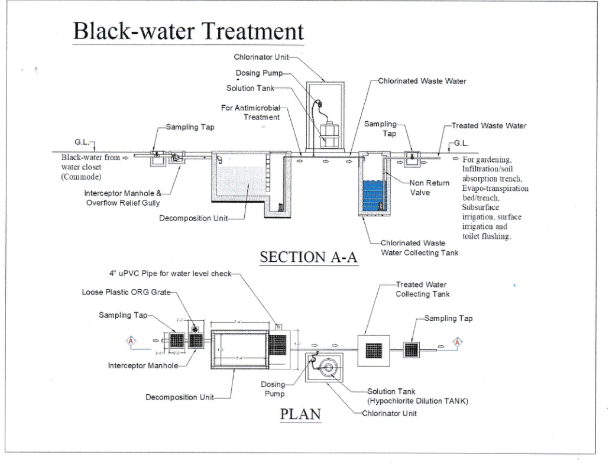
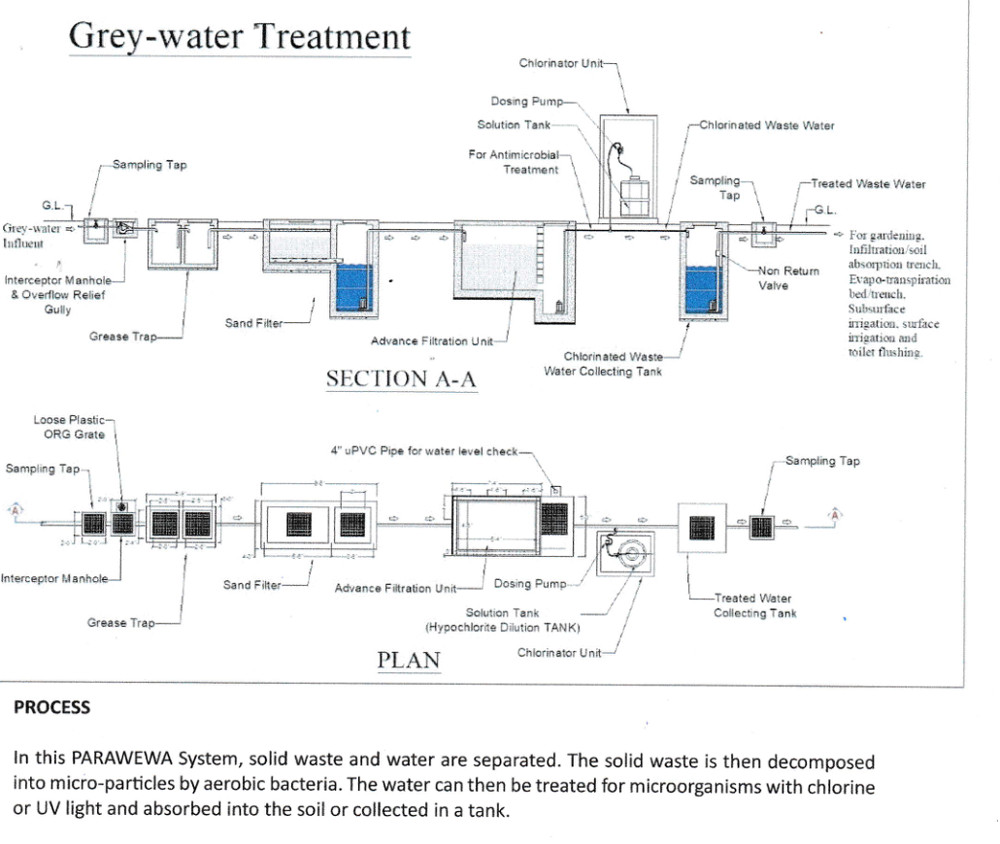
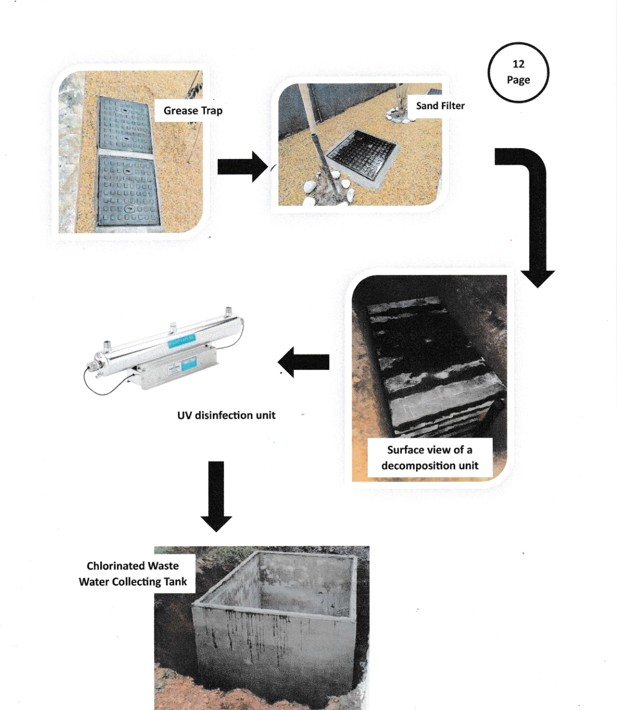
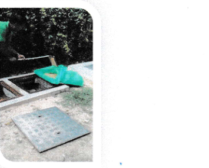

Not a brochure page — this is the plain-language version of Parawewa's own technical documentation: what it is, how blackwater and greywater are treated, what installation sizes look like, how to use it once it's commissioned, how to maintain it, and where its real limitations are.

Conceptual cutaway illustration — the general layer-base treatment concept, not a photograph of an installed unit.
Parawewa is an environmentally friendly, layer-foundation septic tank system, invented in 1996 to solve a persistent problem: leaky concrete rings, groundwater contamination, and the recurring cost of gully bowser emptying. It uses natural aerobic bacteria — not electricity or chemicals — to digest sewage into water, carbon dioxide and heat.
Two engineered options are offered:
Both blackwater (toilet waste) and greywater (sinks, showers, kitchen) can be treated — either separately or through a shared disinfection and collection stage.
From the toilet (commode) to safe reuse water, this is the exact engineered path blackwater takes through the system.

Official engineering diagram — Section A-A and Plan view of the blackwater treatment train.
Sink, shower and kitchen wastewater follows a three-stage filtration path before it ever reaches the disinfection stage.

Official engineering diagram — Section A-A and Plan view of the greywater treatment train.
Real photographs from a commissioned installation — decomposition unit through to the treated water collecting tank.

Real site photographs, in treatment order: grease trap → sand filter → decomposition unit → UV disinfection unit → collecting tank.
Reference dimensions from the official site installation plan. Actual sizing is engineered per site, water table and occupancy.
| Unit | Size | Material | Construction |
|---|---|---|---|
| Decomposition Unit (Black & Greywater) | 6'-0" × 4'-0" × 6'-0" | Precast concrete | Underground |
| Disinfection Unit (UV / Chlorinator) | 2'-0" × 0'-3" × 0'-5" | Dosing pump-fed | On-ground |
| Collecting Tank | 4'-0" × 4'-0" × 6'-0" | Precast concrete | On-ground / Underground |
| Grease Trap | 6'-0" × 3'-0" × 3'-6" | Precast concrete | Underground |
| Sand Filter | 9'-6" × 4'-0" × 3'-6"/5'-6" | Precast concrete | Underground |
The system is patented and factory/site-built by the manufacturer — step-by-step self-install instructions aren't published, since installation is carried out by the company's own certified team rather than third parties.
Once commissioned, the system is ready immediately — but a few basics keep it running exactly as designed.
Once the Parawewa system is commissioned on-site, it's ready for both blackwater and greywater immediately — no priming or start-up period.
Only water-closet (toilet) waste should enter the blackwater decomposition unit. Routing other greywater lines directly into it changes the digestion balance and is explicitly excluded from the warranty.
Sampling taps are built in before the grease trap and after the collecting tank specifically so treated water quality can be checked before it's used for gardening, irrigation or toilet flushing.
If the water closet doesn't drain properly, the internal plumbing line — not the tank — is usually the cause, and inspection is the owner's responsibility via a certified plumber.
The blackwater side is engineered to need no regular maintenance — it's designed for lifetime use across many generations. The parts that do need attention:
An in-built alarm also warns before overflow: if the water pump malfunctions and the sump level rises past the high-level mark, the alarm sounds (it can be muted for 48 hours while a plumber is arranged). The chlorinator and UV unit have their own malfunction alarms too.

Weekly grease trap cleaning: open the lid → remove sediment/scum with a wet/dry vacuum pump → reinstall the lid.
| Layer | Material | Quantity |
|---|---|---|
| Top Layer | 1mm × 2mm Sand | 2 cub. ft |
| Second Layer | 2mm × 3mm Sand | 2 cub. ft |
| Third Layer | 5mm × 6mm Sand | 3 cub. ft |
| Fourth Layer | 10mm × 12mm Sand | 3 cub. ft |
| Fifth Layer | 13mm × 18mm Metal Stone | 4 cub. ft |
| Bottom Layer | 18mm × 20mm Metal Stone | 4 cub. ft |
This points to the internal plumbing line, not the tank. Have a certified plumber inspect it — this is the owner's responsibility.
Have a certified plumber inspect the water pump for malfunction. The alarm can be muted for up to 48 hours while this is arranged.
Usually a blockage in the grease trap or sand filter, or a submersible pump malfunction. Clear sediment from the grease trap with a wet/dry vacuum, refill sand filter media if blocked, or have a plumber check the pump.
Notify the company directly for a service visit, or replace the filter layers using the chart above.
Straight from the official warranty terms and conditions — worth knowing before you rely on it.
No liability for damage caused by natural calamities (floods, earthquakes, landslides, etc.).
No liability for damage caused by tree roots or by a change in surrounding soil structure.
Unauthorized opening of the sewage pit voids the warranty entirely.
Routing greywater directly into the blackwater decomposition unit cancels the full-function warranty.
For greywater systems, the 10-year warranty only covers the decomposition unit's concrete structure — it depends on the grease trap being cleaned weekly.
Skip the weekly grease trap cleaning and the sand filter will block, since full function depends on it.
Option B's submersible pump, UV unit and dosing pump are mechanical/electrical parts — they need manufacturer-scheduled servicing, unlike the passive blackwater chamber.
Because the system is patented and company-built, detailed self-install instructions aren't published — installation is done by the manufacturer's own team only.
Every property's water table, occupancy and soil differ. Get a free site inspection to confirm Option A vs Option B and the right tank sizing.